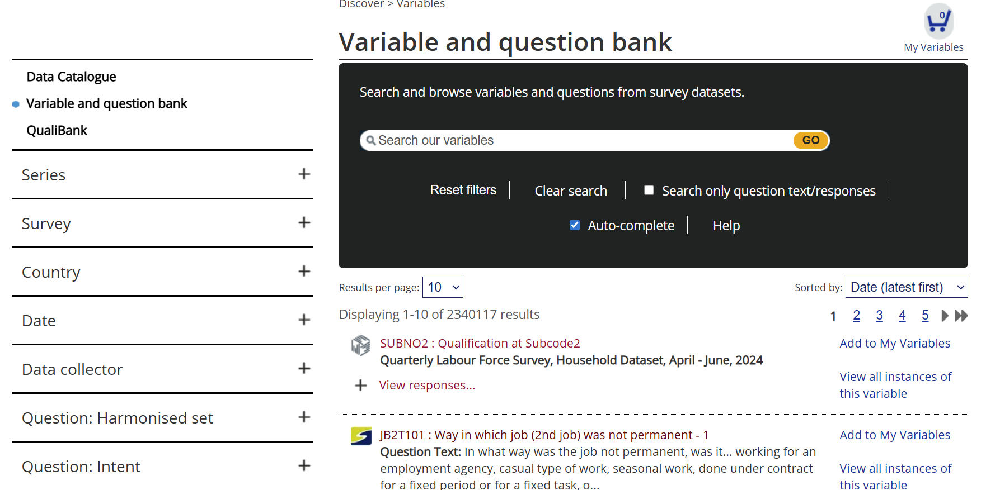
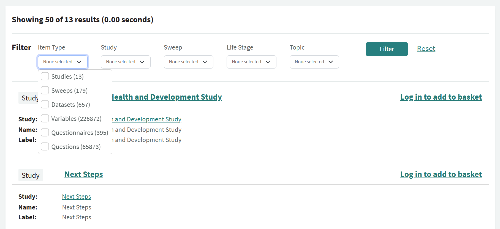
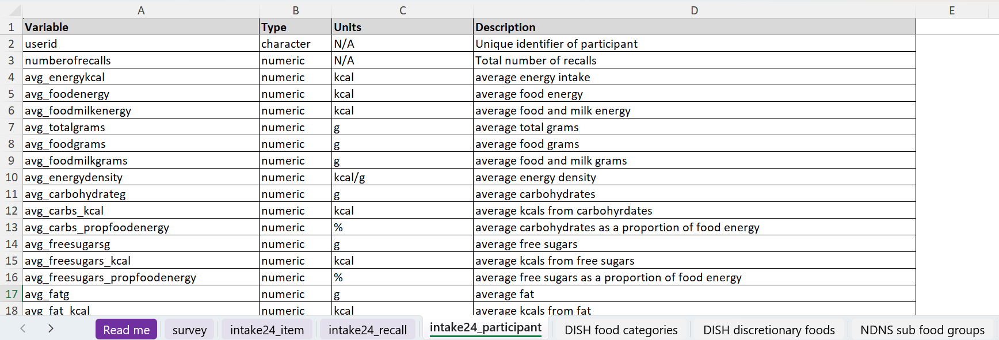
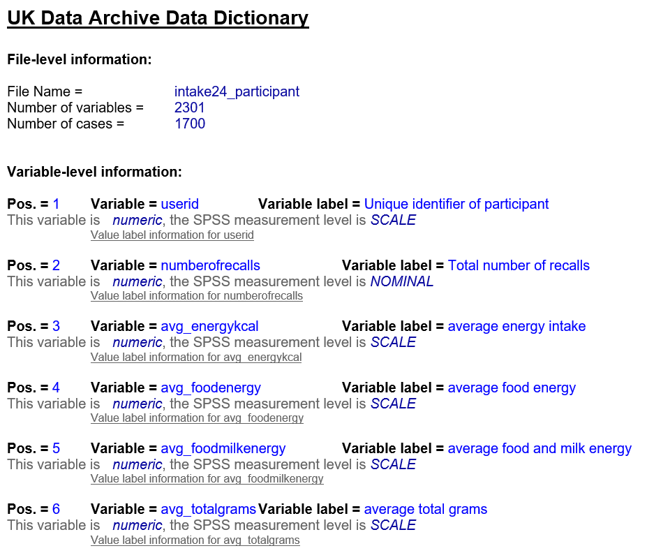

Unit 2.3 Using metadata: Find, understand, assess and act on data
Unit overview
Unit study time
- 2.5 hours
Intended Learning Outcome
By the end of the unit, you will be able to ...
- Describe what a data repository and data catalogue is and understand their role in research
- Use search and filter tools on data catalogues
- Explain the role of metadata in powering data catalogues and supporting the discovery of data (e.g. enabling search and filter functions)
- Use codebooks and data dictionaries to understand a dataset further
- Recognise how we use metadata to assess data
- Recognise how we use metadata to carry out research activities and 'act on' data
How we use metadata
We use metadata to find, understand, assess and act on data.
Metadata makes research data easier to find by providing searchable descriptions and helps us understand it through clear context and documentation. It enables us to assess the quality and relevance of data, and ultimately to act on it by re‑using, sharing, or building upon it with confidence.
Using metadata: Findable
We may want to find data for the following reasons.
- For a literature review or background research
- Identify existing datasets we can conduct comparative or secondary analysis on
- Combine a dataset to produce new findings and carry out interdisciplinary collaboration
- Replicate experiments and validate findings
- Support policy decisions or evidence based work
- For education and training
How can metadata help us to find data?
In our everyday lives, we use metadata to find resources all the time. Can you think of any examples?
Everyday examples of using metadata for finding
Shopping sites: a product's metadata allows us to search and filter the site in order to find the item we're looking for. For example, we can look through categories, brand, price range etc. Streaming platforms: a show's metadata allows us to search and filter the platform to find a show based on genre or actor, for example. Photos: when we take a photo, a device will often capture information such as when and where the picture was taken. You can then filter through this metadata when looking through your photos Website search engines: metadata like titles, descriptions, and keywords tell search engines what a web page is about, making it easier to index and making sure the right sites are being shown in a particular search AI: metadata gives AI the context and structure it needs to understand, process, and learn from data and online resources effectively. AI systems rely on metadata to more accurately identify different digital objects and decide what tasks to perform. Without metadata, and without good-quality data, AI simply wouldn’t be able to work.Tools to find data
How do we go about finding data?
 Practice case study
Practice case study
You're a social science researcher looking at population and climate. You want to conduct research on improving water quality in cities in the UK. You're considering working from secondary data and you want to find open data from the years 2000-2025 that relate to this subject.
How would you go about it? What tools would you use?
One common way people find research is online, through data repositories and data catalogues. These tools bring together a vast range of research projects in one area.
The terms data repositories and data catalogues are sometimes used interchangeably but they are different tools.
CODATA describes a repository as a...
'Physical or digital storage location that can house, preserve, manage, and provide access to many types of digital and physical materials in a variety of formats. Materials in online repositories are curated to enable search, discovery, and reuse. There must be sufficient control for the physical and digital material to be authentic, reliable, accessible and usable on a continuing basis.'.[1]
They are designed for the long-term storage of datasets which can then be managed and accessed through the repository. There might be some functionality to search the repository but this tends to be limited compared to data catalogues.
CODATA defines a data catalogue as a...
'curated collection of metadata records describing datasets and their data elements. Curated and organised using a formal metadata schema appropriate to data and data sets (e.g. ReCollect etc)'.[2]
Sometimes a data catalogue is referred to as a metadata catalogue or metadata repository (note, this is different from a data repository which stores the actual data).
The difference between a data repository and data catalogue
While a data repository stores the actual data, a data catalogue's primary function is discovery. A data catalogue only stores the metadata records and directs people to where they can access the data. When we're looking for data, we normally search a data catalogue and then access the data through a repository.
When you finish a research project, it's good practice to deposit your data in a trusted repository to ensure its long-term preservation (note, this does not mean data needs to be open). When data is deposited in a repository, it then becomes searchable on the repository and any linked data catalogue sites. Thinking back to unit 1.3, data repositories and data catalogues are key components of FAIR infrastructure, making data findable, accessible, interoperable and re-usable.
Data catalogues and data repositories can be cross-discipline or discipline specific. How can you find the right data catalogue and data repository for your area of interest?
Finding a data catalogue
To find data repositories and catalogues for different disciplines, you can use search tools such as ...
You can search different repositories and catalogues across disciplines on these sites. You can also get advice on where to deposit your data from your institution or funder.
Expand the box to explore data catalogues for different disciplines
- ICPSR collates metadata from social and behavioural science datasets.
- CESSDA provides metadata for social science datasets from member archives.
- CEDA contains metadata for climate, atmospheric, and Earth observation datasets.
- Office for National Statistics provides metadata for UK official statistics and secure research datasets.
- Catalogue of Mental Health Measures provides information about thousands of standard and non-standard measures of mental health and wellbeing collected in UK longitudinal studies.
- ARIADNE provides metadata for archaeological resources such as monuments, artefacts, excavation datasets.
- DataMed pulls together metadata for biomedical datasets across multiple repositories using the DATS model.
- BioStudies stores metadata describing life science studies.
- BioSamples stores metadata for biological samples.
- ICES Metadata Catalogue contains geospatial and thematic metadata for marine and oceanographic datasets.
Practice case study
As the social science researcher conducting research on population, climate, and water quality, find a data catalogue relevant to your work.
The data catalogue we chose ...
We chose the data catalogue UK Data Service. The UK Data Service stores information about economic, population, and social research data in the UK, so it is relevant to our brief as social science researcher.
You can see the UK Data service listed on redata3 here and Fairsharing here.
Using a data catalogue
Practice case study
Continuing in your role as a social science researcher, explore the UK Data Service and try locating relevant research projects connected to your brief. What tools do you use to find relevant research projects?
You may have used the search and filter functions to find relevant resources quickly.
For example could put 'water quality' in the search bar ...

To refine our search further, we could set the filters to reflect the brief (e.g. 2000-2025, Natural environment, Open data) ...

What research projects do you find?
Check if you found the same research projects...
If you follow the steps above, you may have come across the following research studies ...
- Walsh, C., Wang, L. (2024). Using Participatory Approaches To Instigate Improvements in Water Quality, 2021-2022. [data collection]. UK Data Service. SN: 856882, DOI: 10.5255/UKDA-SN-856882
- Hutchins, M. (2024). Water Quality Model Outputs for an Urban River in Birmingham, 2013-2014. [data collection]. UK Data Service. SN: 857393, DOI: 10.5255/UKDA-SN-857393
- Chenoweth, J., López-Avilés, A., Morse, S., Druckman, A. (2016). SPREE project water use and wellbeing survey. [data collection]. UK Data Service. SN: 852336, DOI: 10.5255/UKDA-SN-852336
- Reed, M., Helen, K. (2021). Exploring Ecosystem Markets for the Delivery of Public Goods in the UK: Stakeholder Interviews, 2018-2021. [data collection]. UK Data Service. SN: 855274, DOI: 10.5255/UKDA-SN-855274
- Organisation for Economic Co-operation and Development. (2021). OECD Environment Statistics, 1950-2020. [data collection]. UK Data Service. SN: 7784, DOI: http://doi.org/10.5257/oecd/env/2021
Data catalogues help us find relevant research projects in a quick, user-friendly way. They also provide citation information, meaning that when we are doing a vast amount of research to find secondary data or a literature review, data catalogues and metadata help us efficiently collect and store the important citation data.
Now try find a repository and/or catalogue that is relevant to your area of research. You can use sites like re3data.org or FAIRsharing.org, or talk to other researchers in your field to identify the leading repositories and/or catalogues.
The role of metadata in data catalogues
How do you think we are using metadata to help us find relevant research projects on data catalogues?
The reason we can search and filter data catalogues is because each study has metadata. Without it, we'd have to open every study page individually to understand what it's about and whether it's relevant to our work. As metadata is machine readable and machine actionable, we have the power to tailor our searches and scan lots of resources in a structured, efficient way.
Keywords search tool
When you type search terms into a data catalogue, the system scans the metadata and returns the resources that best match your query.
Filter tool
Data catalogues use metadata to power their filter functions. When we narrow down search results by criteria such as geographical location, publication date, the organisation behind the research, the topics covered, or the level of data access, we are using the studies' metadata to organise our search. If a study didn't have this metadata, the filters wouldn't work and now results would be shown in our search.
Some sites also allow you to search and filter metadata about variables and questions (if the data was collected by a survey). For example...
- UK Data Service: Variable and question bank allows users to search the variables and questions within datasets and data collection tools
- CLOSER Discovery: Variable and question search also offers users to search through variable and question metadata
Using metadata: understand data
Once we have used the search and filter functions on a data catalogue to find relevant research projects, how can metadata help us understand what a research project is about?
Finding → understanding
When we select a particular research study in a search list, we are taken to the profile page.
On this page we can see the metadata describing the overall project. This gives us a clear overview of what the study is about, when it was conducted, what datasets it contains and how we can access the data.
For example...
 [3]
[3]
Data catalogues and repositories will often specify what metadata people need to provide when they deposit their data. By standardising the metadata requirements, the same level of information is available for each study on the site. This makes it possible to search and compare easily. We will explore other tools that are used to standardise metadata for data catalogues in the upcoming units 2.4 and 2.5.
Understanding research projects in more detail
Data catalogues usually provide the overall picture of a research project. As we explored in unt 2.1, having more information about the variables within a dataset helps us understand a study further and assess whether it is relevant to our research needs.
How do we find metadata that describes variables and the type of data within a dataset?
On some data catalogues you can explore variable metadata which is linked to the dataset you've selected. For example ...
- You review metadata for an individual variable, such as the data type and linked questions, on UK Data Service Variable and Question Bank. For example, the variable 'Past health problems - 5' from the Quarterly Labour Force Survey (July - September 2024 study). [4]
- On CLOSER Discovery you can find similar variable metadata. For example, the variable '(A1) Did CM receive housing benefit whilst at address' from the National Child Development Study. [5]
On CLOSER Discovery, you can also find metadata for an individual question. For example, the variable 'How interested you are in Politics' from the WAVE 7 of Understanding Society study [6]. This gives us information about variables linked to the question, where the question appears in the questionnaire, how the participant could respond the question and the topics the question relates to.
On some data catalogues, you can also use variable and question metadata to discover data. On CLOSER Discovery and the UK Data Service, you can search and filter at the variable and question level. For example...
The UK Data Service has a dedicated Variable and Question Bank.

On CLOSER discovery, you can filter by variables or questions.

By being able to search across lots of questions and variables in different datasets, we can spot opportunities to reuse existing data for new research or make cross study comparisons. Without variable and question metadata, we might not realise that two different studies, despite having a different overall focus, actually have comparable data. This means we could miss out on re-using data and could end up duplicating work.
Where data is open, some sites have used variable and question metadata to make their data interactive. For example, the British Election Study has created a 'Data Playground' which allows users to create graphs using data from across all their studies conducted over the past 60 years. This functionality only works because all studies have detailed and standardised variable and question metadata. Without that, the 'Data Playground' wouldn’t be able to link or compare anything across studies.
Understanding research: Codebooks and data dictionaries
Another way we can access variable and question metadata is through documentation stored alongside datasets. These types of documentation are called codebooks and data dictionaries. They are usually available as downloadable resources on a data catalogue.
For example, the 2024 research project "Dietary Intake in Scotland's Children (DISH)" [7] has a Codebook and Data Dictionary available to download in the 'Documentation' tab on the UK Data Service.

What information do codebooks and data dictionaries cover?
Both codebooks and data dictionaries give a more in depth insight into the data. Often, codebooks and data dictionaries can be automatically generated from metadata created in the research process. If a project didn't have metadata, it would be hard to create these types of documentation and they may be unstructured and difficult to understand.
While codebooks and data dictionaries are sometimes used interchangeably, they are different resources.
CODATA defines a Codebook as a ...
'Document, in social sciences, that provides a structured description of a dataset, including details such as variable names, definitions, possible values, ranges, data types, provenance (source or origin), and collection methods. It serves as a reference for understanding and interpreting the data.' [8]
For example, the codebook from the 2024 research project "Dietary Intake in Scotland's Children (DISH)"[9] gives information on abbreviations used in the research, the variables (such as data type, unit of measurement and description), the codes and categories used in the survey.

CODATA defines Data dictionary as a ...
'collection of descriptions of the data objects or items in a data model. After each data object or item is given a descriptive name, its relationship is described (or it becomes part of some structure that implicitly describes relationship), the type of data (such as text or image or binary value) is described, possible predefined values are listed, and a brief textual description is provided. This collection can be organised for reference into a data dictionary.' [10]
The data dictionary for the DISH project lists the different variables in a survey and a short label to describe the variable[11]. It contains more high level information than a codebook as it does not include information such as unit of measurement, codes or categories used.

Difference between codebooks and data dictionaries
Data dictionaries give a broad overview of the variables in a dataset, while codebooks go deeper, defining each variable and explaining what kind of data was collected and how. Both draw from the study’s metadata, so their quality depends on the quality of the metadata.
Using metadata: Assess
Once you understand what the research is about and the data it contains, how can you use metadata to assess the trustworthiness of data and it's relevance to your work?
Understanding → assessing
As we explored in unit 2.2, metadata gives us provenance information that explains where the data came from and how it was collected. If a study has robust provenance metadata, we know we can trust the study and potentially re-use it's data in our research. This provenance metadata can also help us explore other resources from the study, such as the data collection instrument (e.g. the questionnaire), linked variables or studies.
Metadata helps us assess how relevant a study and its data is for the work we want to carry out.
For example, we may only want to look at projects that are...
- Conducted using a specific data collection instrument, for example online questionnaires
- Asks questions to specific set of people, for example pregnant people
Metadata can help us find studies that we may not think are relevant at first glance. For example, we might want to conduct research on pregnant people's welfare. There may be a study that looks at the social attitudes and perceptions of all citizens in the UK aged 18-100. On the surface, this may not seem relevant as the scope of individuals is beyond that of pregnant people and the study itself does not focus on pregnancy. However, if we have question and variable metadata, we can see if there are questions/variables linked to pregnancy or if there were specific questions directed to pregnant people.
Using metadata: Action
Once you have found the data, understood it and assessed its trustworthiness and relevance to your work, you can now decide what you want to do with it. How can metadata help us take action in our research process?
Assessing → action
There are lots of different actions you might want to take.
You may want to ...
- Access the data
- Contact a researcher or organisation involved in the study to learn more about their work
- Use a persistent identifier, such as a DOI, to link in your work or share the study further
- Find out what other studies the researchers have carried out by searching their Orchid ID or looking at associated studies
- Find other studies that explore the same subject
Without the structured metadata, it would be hard to do these activities. For example we may struggle to find contact information, it could be hidden in a dataset file or added to the bottom of the abstract or publication. Similarly, we wouldn't know where to get citation information such as a DOI for the dataset or an Orchid ID for an individual. Instead, metadata makes these activities possible and efficient.
Test your knowledge
True or false...
- Data repositories and data catalogues are the same thing.
- Data catalogues store the actual research data.
- You can filter a data catalogue without metadata.
- A data dictionary includes analysis results and conclusions.
Answers
- Data repositories and data catalogues are the same thing. FALSE
- Data catalogues store the actual research data. FALSE
- You can filter a data catalogue without metadata. FALSE
- A data dictionary includes analysis results and conclusions. FALSE
References
- [1] CODATA (2025) Research Data Management Terminology: [respository[(https://terms.codata.org/rdmt/repository)
- [2] CODATA (2025) Research Data Management Terminology: data catalogue
- [3] Walsh, C., Wang, L. (2024). Using Participatory Approaches To Instigate Improvements in Water Quality, 2021-2022. [data collection]. UK Data Service. SN: 856882, DOI: 10.5255/UKDA-SN-856882
- [4] Office for National Statistics (2025) Quarterly Labour Force Survey, July - September, 2024 (764) 4th Edition. UK Data Service. SN: 9323, DOI: http://doi.org/10.5255/UKDA-SN-9323-4
- UK Data Service (2025) Variable: Past health problems - 5 in 'Quarterly Labour Force Survey, July - September, 2024' UK Data Service Catalogue
- [5] University of London, Institute of Education, Centre for Longitudinal Studies. (2024). National Child Development Study: Age 42, Sweep 6, 1999-2000. [data collection]. 3rd Edition. Joint Centre for Longitudinal Research, [original data producer(s)]. UK Data Service. SN: 5578, DOI: http://doi.org/10.5255/UKDA-SN-5578-2
- CLOSER (2025) Variable: (A1) Did CM receive housing benefit whilst at address in Age 42, Sweep 6, 1999-2000 in NCDS6 CAI Questionnaire (2000) Dataset CLOSER Discovery
- [6] University of Essex, Institute for Social and Economic Research. (2023). Understanding Society: Waves 7-8, 2015-2016: Special Licence Access, EU Referendum. [data collection]. UK Data Service. SN: 8556, DOI: http://doi.org/10.5255/UKDA-SN-8556-1
- CLOSER (2025) Variable: How interested are you in politics? in 'Wave 7 Youth Self-Completion Questionnaire' CLOSER Discovery
- [7] Jaacks, L., Food Standards Scotland. (2025). Dietary Intake in Scotland's CHildren (DISH), 2024. [data collection]. UK Data Service. SN: 9370, DOI: http://doi.org/10.5255/UKDA-SN-9370-1
- [8] CODATA (2025) Research Data Management Terminology: Codebook https://terms.codata.org/rdmt/codebook
- [9] Jaacks, L., Food Standards Scotland. (2025). Dietary Intake in Scotland's CHildren (DISH), 2024. [data collection]. UK Data Service. SN: 9370, DOI: http://doi.org/10.5255/UKDA-SN-9370-1
- [10] CODATA (2025) Research Data Management Terminology: Data dictionary https://terms.codata.org/rdmt/data-dictionary
- [11] Jaacks, L., Food Standards Scotland. (2025). Dietary Intake in Scotland's CHildren (DISH), 2024. [data collection]. UK Data Service. SN: 9370, DOI: http://doi.org/10.5255/UKDA-SN-9370-1